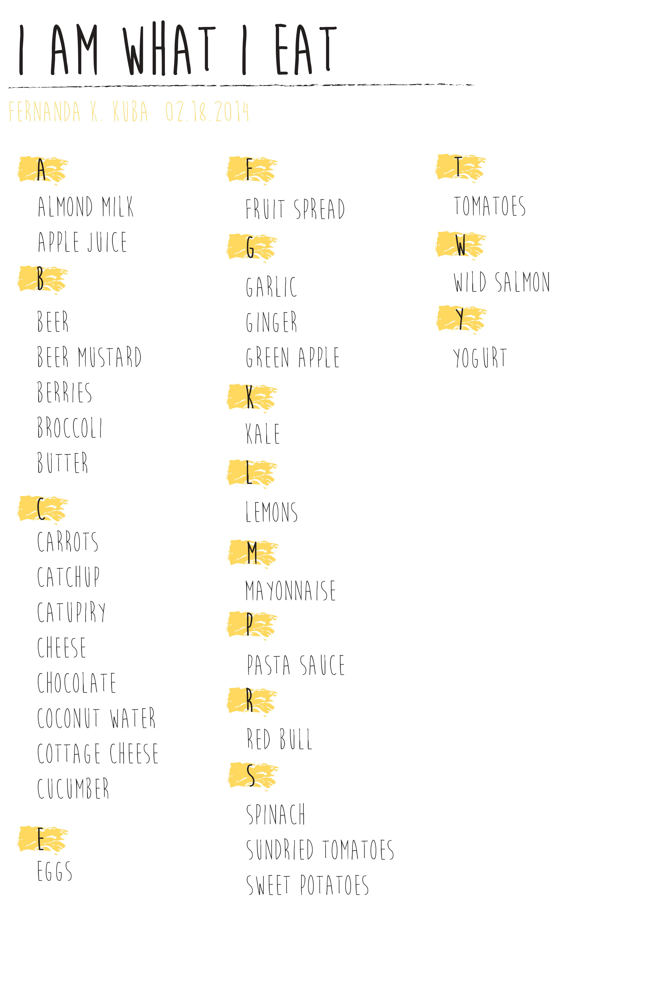
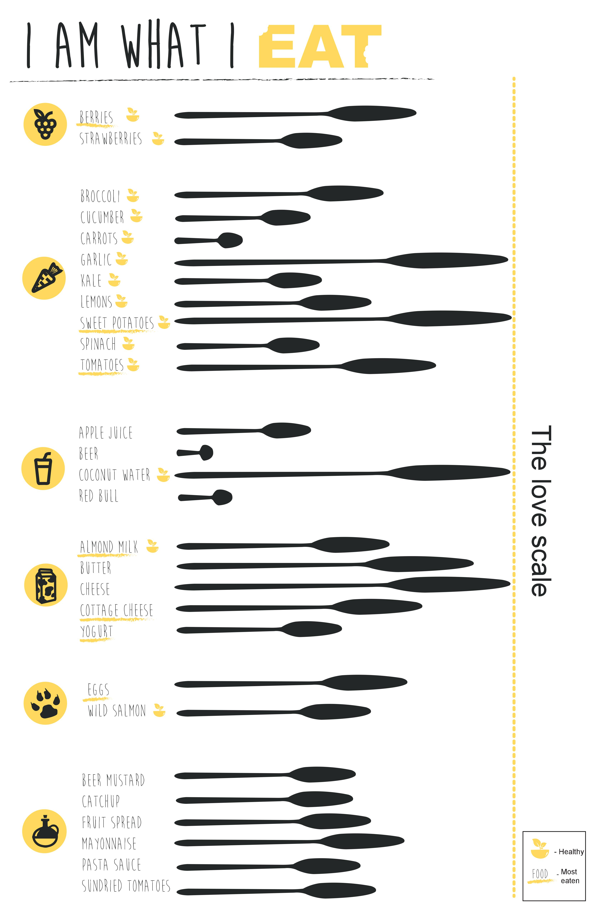
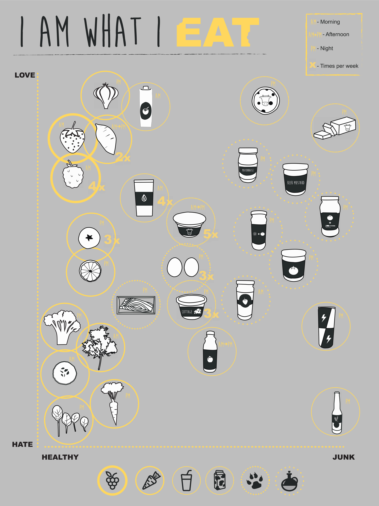

This work consisted in listing all the food I had in my fridge and categorizing them using images and graphs. The goal was to have as much information about the food as possible, not using text. The food was listed alphabetically, then categorised into fruits, vegetables, drinks, dairy, animals and industrialised food. Then, they were put in a “love scale”, which involved saying how much I liked each food. Moreover, the food was separated into how many times per week I ate them, and what time of the day. Last, they were put in a graph of love until hate on one axis and of healthy until unhealthy on another axis.


